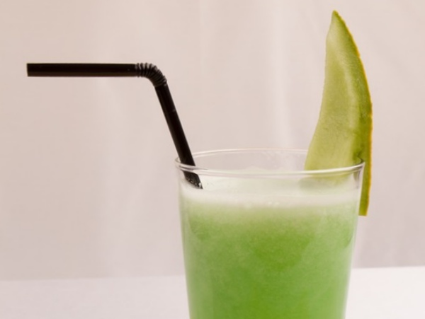
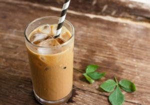
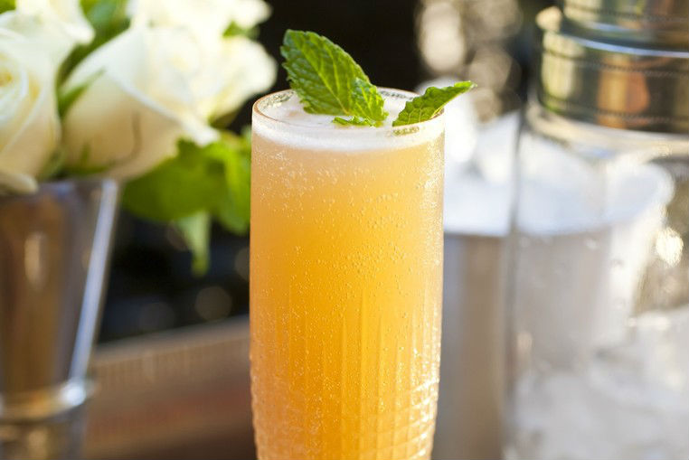
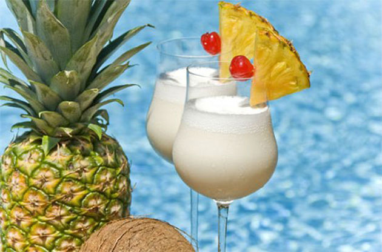
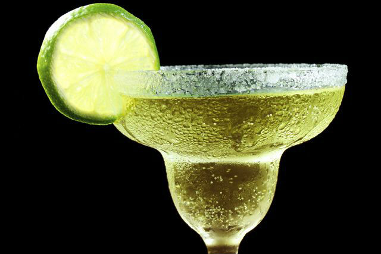

menu de bebidas
Jugos
El melón es una fruta muy veraniega debido a su alto contenido de agua . Tiene una pulpa dulce, de un color que puede ir desde el blanco amarillento y el verde, hasta el naranja. Su corteza también puede variar entre estos mismos colores.
precio: $5.900
Deliciosa AGUA FRESCA de CAFÉ con leche condensada

Disfruta de las tardes calurosas con esta refrescante AGUA de CAFÉ con leche condensada
precio: $6.900
Café helado con leche condensada
La leche condensada es una buena alternativa para disfrutar de un rico café. Ésta opción seguro te gustará ya que a pesar de su sabor dulce, el café no pierde su consistencia. Además esta opción helada te va a refrescar en esos días de calor.
precio: $7.700
Café helado a la Caribeña
Una opción rica que además cuenta con un toque de ron, pero también vainilla. La bebida maneja una combinación de sabores interesante, pero sin perder ese exquisito sabor a café.
precio: $6.900
Bloody Mary

El Bloody Mary es uno de los cócteles más bebidos en Estados Unidos. Sin embargo, nadie sabe a ciencia cierta cómo comenzó su historia. Dicen que en París, un americano llamado Petiot mezcló vodka y zumo de tomate a partes iguales.
precio: $9.900
Acapulco
El tequila sunrise o acapulco es un cóctel preparado de dos maneras diferentes: la original, con tequila, crème de cassis, jugo de lima y agua con gas; la forma más popular está hecha con tequila, jugo de naranja y granadina. El cóctel, que originalmente se servía en el Arizona Biltmore Hotel en Phoenix (Estados Unidos), debe su nombre a su apariencia cuando se sirve en un vaso: los ingrediente con mayor densidad (el casis o la granadina) se hunden gradualmente, creando variaciones de colores semejantes a los de un amanecer (sunrise, en inglés).
precio: $10.900
Piña Colada
Ron, crema de coco y zumo de piña, la bebida ya era famosa en Puerto Rico (en 1978 ya era la bebida oficial del país), en 1979 empezó a ser conocida a nivel internacional gracias a la canción “Escape” de Rupert Holmes. Desde entonces mejor conocida como “The Piña Colada Song” que incluso llegó a posicionarse en el nº1 del Billboard Hot 100. Hoy en día este cóctel tropical es conocido en todo el mundo y es uno de los más demandados.
precio: $13.900
Margarita
Este un cóctel mexicano está hecho con tequila, jugo de limón y Triple sec, generalmente servido con sal sobre los bordes del vaso. En recetarios de cocteleria de los años 30 ya se menciona el Tequila Cóctel.